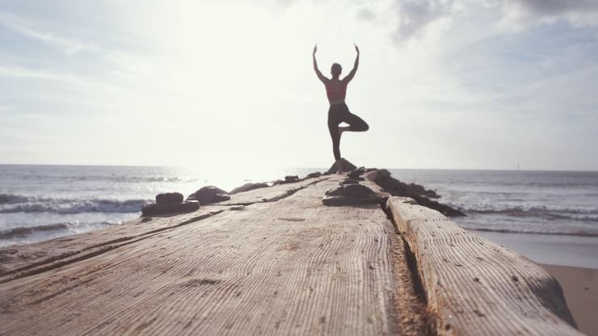
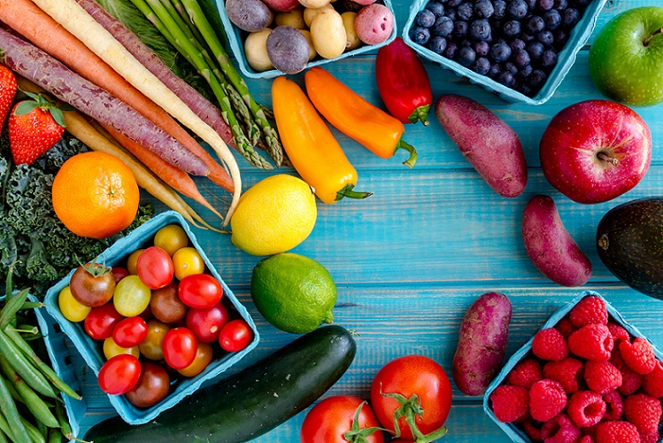

See How You Don't Have To Start Your Weight Loss Journey Sweaty!

Do you feel like you’ve tried everything to lose weight?
Maybe you’ve even had some success, but struggled to stick to a diet or exercise plan in the long term?
Don’t panic.
Many of the weight loss plans advertised online, in books, and on the covers of magazines simply aren’t sustainable. It’s not you that’s the problem – it’s the diets.
So, what is the best way to lose weight? By removing unhealthy foods, one step at a time.
No more feeling overwhelmed or trapped by a difficult diet or exercise regime – you’ll make real, long-term changes in a way that feels easy and natural.
Start with baby steps. Make your new habit super-easy – something like, ‘Stop drinking fizzy drinks at work.’
Change your environment. Set yourself up for success by filling your fridge with healthy food, sticking up motivational post-it notes and not buying junk food.
Stick your habits together. Try combining habits to make them stick. For example, you could make it a habit write a weekly meal plan while relaxing after your Sunday jog.
Break your large goals down into smaller ones. Your large goal could be to lose weight, while your small goal could be to cut out one unhealthy food this week.
Reward yourself. When you reward yourself for completing a habit, you strengthen it. Try jumping in the air, giving yourself a big smile in the mirror, or reciting positive affirmations each time you make a good food choice.
Avoid too much choice. Create your habits, make them specific, and stick to them. Too much choice overwhelms us, hence the need to avoid fad diets and workout routines.
4 Good Reasons Why You Should Embrace A Healthy Lifestyle Today

You will live longer.The truth is that by eating healthy and nutritional food and taking care of your body you will add up to your overall health and well-being. That will increase your life expectancy simply because your immune system will get better, you will suffer far less from diseases and colds and you will have much more energy to do the things you love.
You will look happier.By reducing stress and anxiety, your mood will improve and you will have much more happiness and excitement in your life. Being healthy from inside and looking amazing from outside will definitely increase your emotional state and you will start seeing things from the brighter side. Feeling great about yourself from inside and outside is the key to living a more abundant, happy and confident life.
You will become more confident.When you start feeling good about your body, you become a much more confident person every time you look at yourself in the mirror. Maintaining a healthy and fit body can really boost your self-esteem and confidence. When you look good outside, you start feeling amazing inside too and that can be seen in all different areas of your life-at home, at your workplace and when you are out with friends. It is simply a great way of feeling confident and amazing at the same time about yourself.
You will inspire other people and become a role model
You will look younger.When you start feeling great about yourself and your body there is no way you cannot motivate other people around you to do the same. Your friends and your family will start seeking advice and ask you how you have succeeded in maintaining a healthy lifestyle. When you are so full of life, excitement and confidence, other people will be seeing you as their role model and will be inspired to take care of themselves too. Each time you are going to the gym or including a healthy snack in your diet you are giving an example and encouraging others to do the same.